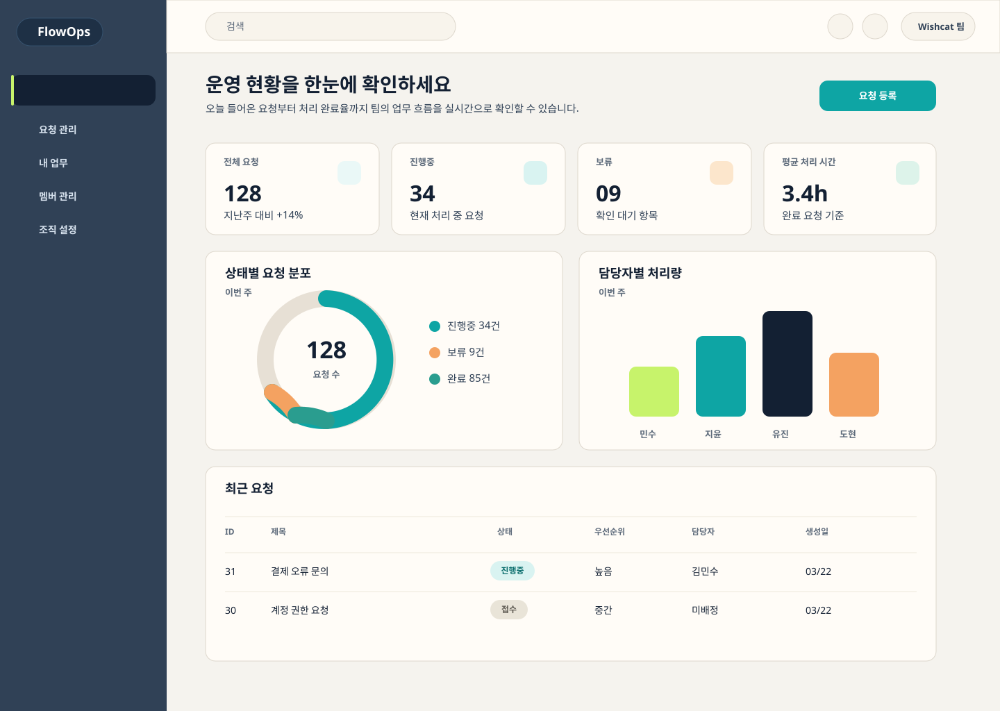
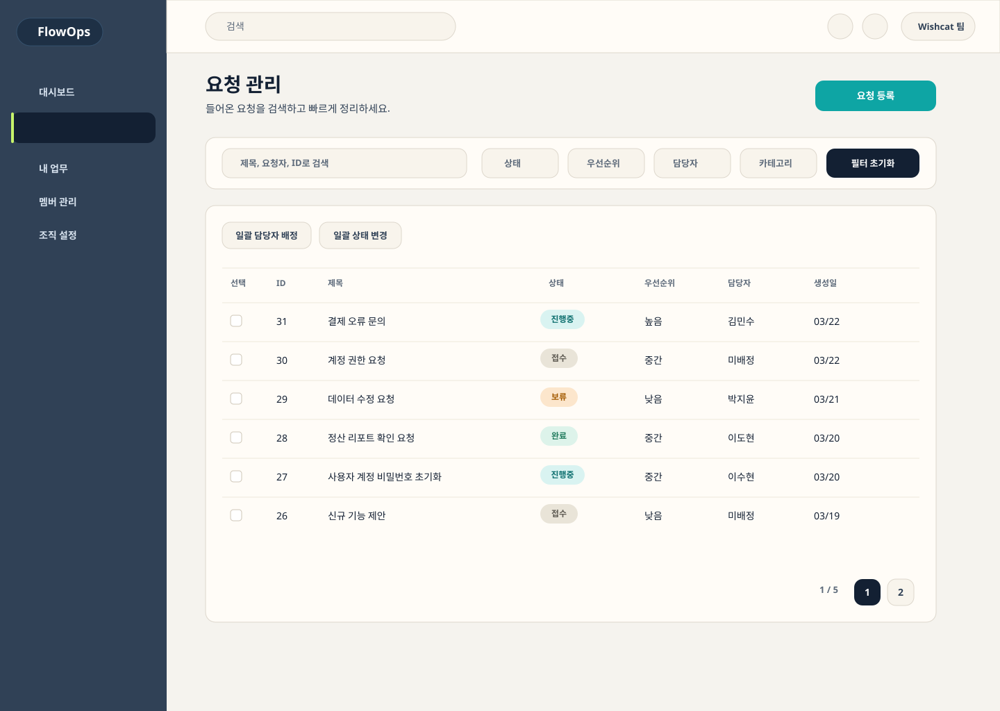
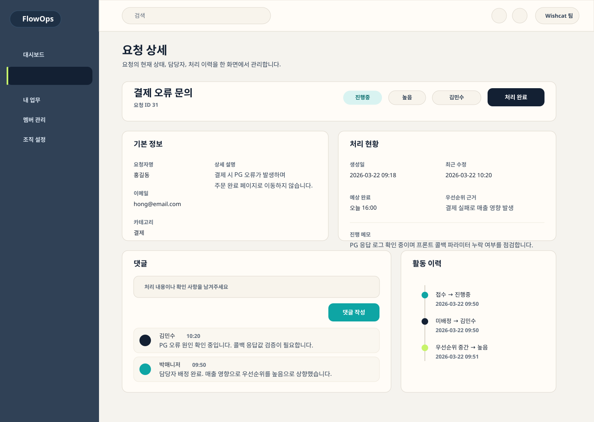
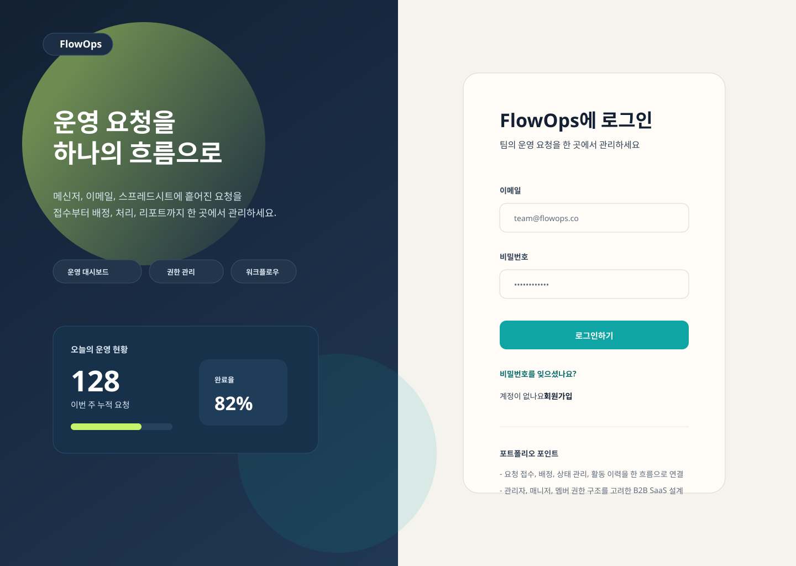
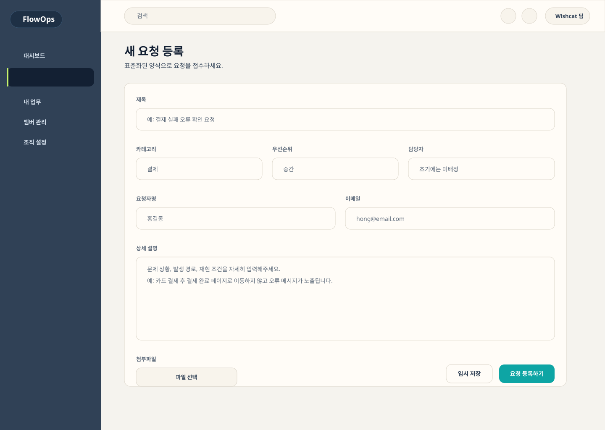
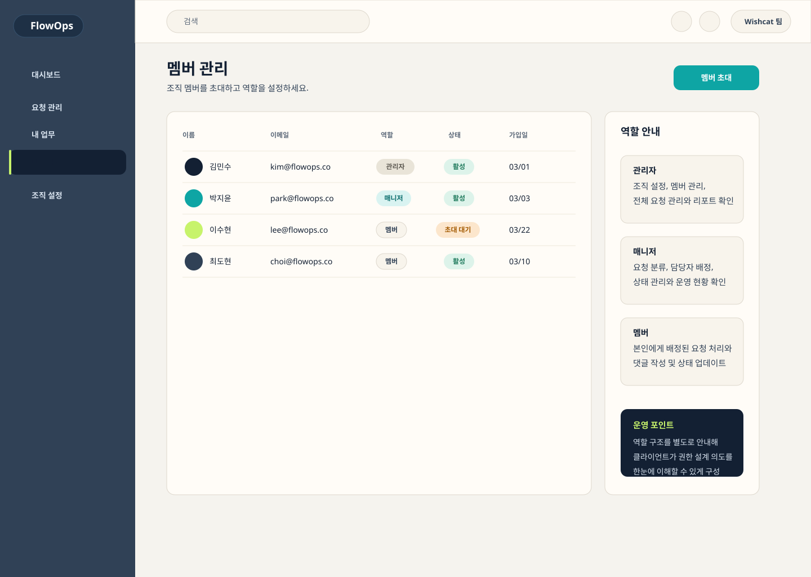

운영 요청 통합 관리
Wishcat Portfolio Project
운영팀의 혼잡한 요청 흐름을
하나의 SaaS로 정리한 FlowOps
메신저, 이메일, 스프레드시트에 흩어진 요청을 접수, 배정, 처리, 리포트까지 한 화면에서 연결하는 운영 대시보드형 B2B SaaS입니다.
관리자, 매니저, 멤버 권한 구조
PRD, IA, ERD, 와이어프레임, 시안



Overview
왜 이 프로젝트가 포트폴리오에 유리한가
위시캣 포트폴리오에서는 단순 소개형 사이트보다 실제 발주와 가까운 구조가 더 강합니다. FlowOps는 운영 실무에서 자주 발생하는 문제를 기준으로 서비스 구조를 설계했습니다.
요청 누락
여러 채널로 들어온 요청이 분산되어 누락되기 쉽습니다.
책임 불명확
담당자와 상태가 분리돼 있지 않아 중복 대응이 발생합니다.
운영 가시성 부족
관리자는 처리량, 병목, 완료율을 즉시 파악하기 어렵습니다.
Product Framing
운영 문제를 해결하는 구조
접수
표준화된 요청 양식으로 입력 채널을 통합
배정
우선순위와 담당자를 기준으로 작업 큐를 정리
처리
댓글과 활동 이력으로 작업 맥락을 축적
리포트
완료율, 처리량, 평균 처리 시간으로 운영 현황을 시각화
Roles
역할 기반 권한 설계
관리자
조직 설정, 멤버 관리, 전체 요청 제어, 운영 리포트 확인
매니저
요청 분류, 담당자 배정, 상태 변경, 팀 처리량 관리
멤버
본인 업무 처리, 코멘트 작성, 요청 완료 처리
Core Features
실무형 SaaS 포트폴리오로 보이게 만드는 핵심 기능
운영 대시보드
KPI, 상태 분포, 담당자별 처리량으로 운영 병목을 즉시 파악합니다.
요청 관리
검색, 필터, 상태 변경, 담당자 배정을 메인 작업 공간에서 처리합니다.
요청 상세
기본 정보, 댓글, 활동 이력, 상태 제어를 한 화면에서 관리합니다.
내 업무
개인 작업 큐를 별도 제공해 운영자 입장에서 우선순위를 빠르게 정리합니다.
멤버 및 권한
관리자, 매니저, 멤버 역할을 분리해 B2B SaaS 구조의 신뢰도를 높였습니다.
활동 로그
상태 변경, 담당자 변경, 처리 코멘트를 기록해 운영 히스토리를 남깁니다.
Project Artifacts
기획에서 화면까지 이어지는 산출물
문제 정의, 목표, 사용자 유형, 핵심 기능, MVP 범위를 정리
운영 흐름에 맞춘 메뉴 구조와 페이지 관계 설계
요청 접수부터 처리 완료까지의 액션 흐름 정리
조직, 멤버, 요청, 댓글, 활동 이력을 반영한 데이터 모델 구성
핵심 6개 화면을 기준으로 정보 구조와 액션 위치 정의
토큰, 상태 배지, 카드, 테이블, 대시보드 컴포넌트 톤 정리
Screens
핵심 화면 시안
실제 SaaS처럼 보이도록 색상, 위계, 데이터 밀도를 포함해 정리한 화면입니다.



System Thinking
포트폴리오에서 강조할 설계 포인트
- 조직 단위 데이터 분리를 고려한 멀티 테넌트 구조
- 관리자, 매니저, 멤버로 나뉘는 역할 기반 권한 관리
- 상태 변경과 담당자 변경을 추적하는 활동 로그 테이블
- 운영 리포트를 위한 요청 상태, 완료 시점, 담당자 기준 집계 구조
Why It Wins
클라이언트가 좋아할 포인트
- 실제 외주 수요가 높은 백오피스형 서비스 구조를 반영
- 회원 기능보다 운영 기능이 중심이라 실무 이해도가 드러남
- 디자인뿐 아니라 PRD, 데이터, 권한, 흐름 설계까지 설명 가능
- 산업군을 바꿔도 재활용 가능한 범용적인 SaaS 포트폴리오
Wishcat Proposal
위시캣 지원에 바로 붙일 수 있는 제안 포인트
단순히 화면을 예쁘게 만드는 것이 아니라, 운영 구조를 이해하고 실무형 SaaS로 설계할 수 있다는 점을 제안서에서 선명하게 전달하는 구성이 중요합니다.
문제 이해 → 설계 접근 → 산출물 → 협업 방식
안녕하세요. 운영 프로세스와 백오피스 구조를 중심으로 웹 서비스를 설계하고 개발하는 작업에 강점이 있습니다. 이번 프로젝트는 단순 기능 구현보다, 실제 운영자가 요청을 접수하고 분류하고 처리하는 흐름을 얼마나 명확하게 구조화하느냐가 중요하다고 이해했습니다.
저는 FlowOps와 같은 운영 대시보드형 SaaS 구조를 바탕으로 권한 설계, 요청 상태 관리, 담당자 배정, 활동 이력, 운영 리포트까지 포함한 실무형 서비스를 기획해두었습니다. 그래서 초기 요구사항 정리부터 화면 구조, 데이터 설계, MVP 범위 설정까지 안정적으로 함께 진행할 수 있습니다.
진행 시에는 먼저 요구사항을 기능 단위로 정리하고, 핵심 사용자 플로우와 관리자 기능을 우선 설계한 뒤, MVP 범위를 명확히 나눠 개발 리스크를 줄이는 방식으로 협업합니다. 필요한 경우 PRD, IA, 와이어프레임, 화면 시안까지 선행해서 의사결정 속도를 높일 수 있습니다.
제가 줄 수 있는 가치
운영 워크플로우를 서비스 구조로 풀어내고, 관리자 화면까지 설계 가능한 점이 강점입니다.
클라이언트가 기대할 수 있는 결과
단순 랜딩 페이지가 아닌, 실제 업무에 사용할 수 있는 백오피스형 제품 관점의 결과물을 제공합니다.
Next Step
다음 단계로 바로 이어갈 수 있습니다
이 페이지를 기반으로 실제 개발 시안, React 랜딩 페이지, 상세 PRD 문서, 또는 위시캣 제안서용 소개문구까지 확장할 수 있습니다.
Ready for build
FlowOps Portfolio Pack
기획, 화면, 설명 문구를 하나의 패키지로 정리 완료